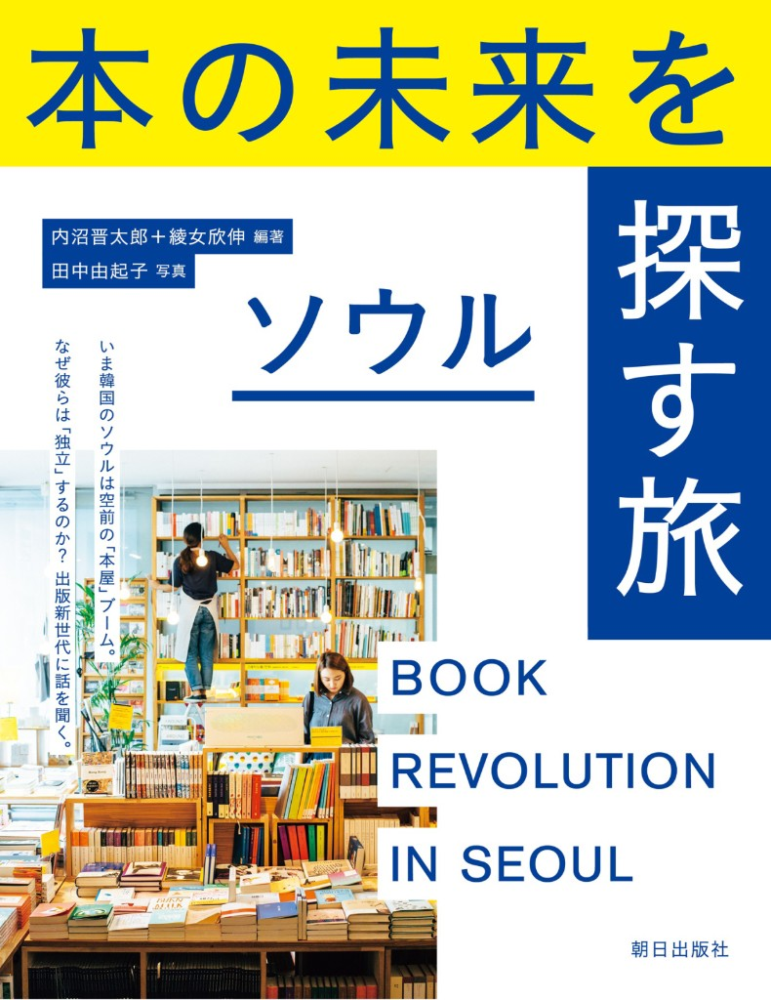
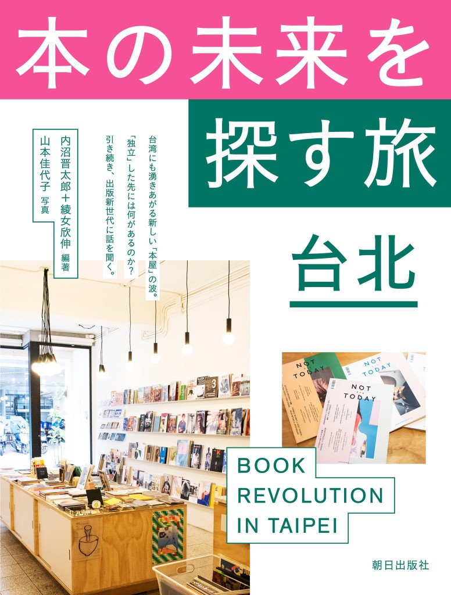
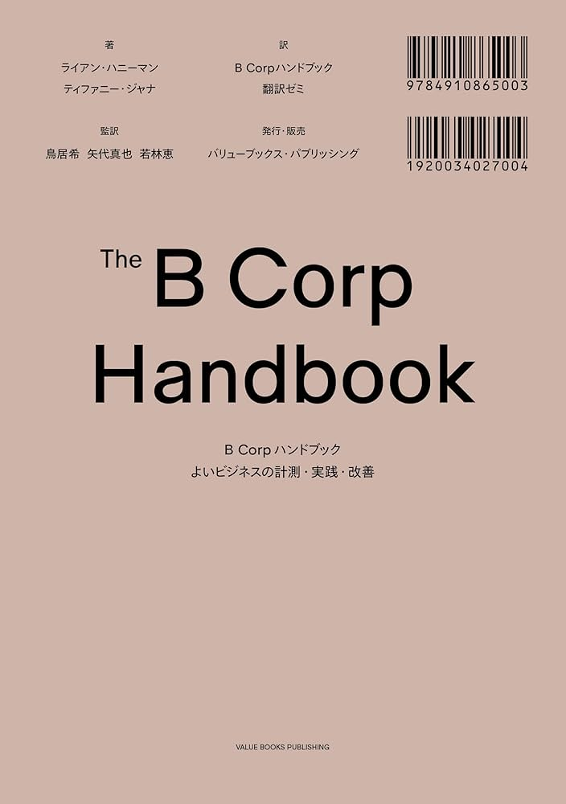

なぜバリューブックスか
実証パートナーに最適な7つの理由
バリューブックスは「これから作る」のではなく「すでに動いている」解決策を持つ、数少ない企業の一つです。
すでに動いている
SKYPOD倉庫の導入準備、プロアカウントの立ち上げ、新刊販売戦略の実行——すべてが構想ではなく進行中の事業です。
古本流通の圧倒的な事業基盤
年間数百万冊規模の古本買取・販売を手がける、国内有数の古本流通プレイヤー。仕入れ・査定・在庫管理・物流のインフラがすでに稼働しており、書店への古本卸をすぐに実行できる体制があります。
海外モデルの研究と統合
海外事例を研究し、日本独自の書店インフラモデルを構想。本提案の発起人である内沼晋太郎は韓国・台湾の出版業界についての著書もあり、アジアを含む国際的な視座から理論と実行の両方を持っています。


書店開業のプロフェッショナル
内沼の著書『これからの本屋読本』は多くの独立系書店開業のきっかけとなり、全国の書店オーナーとの幅広いネットワークを持っています。また「書店活性化のための課題（案）」内の事例としても登場する、青森県八戸市の公営書店「八戸ブックセンター」を実現に導いたディレクターとしても知られています。

B Corp認証の信頼
世界が認めた「社会に良い企業」の証明であるB Corpを取得。バリューブックスでは『B Corp Handbook』の日本版を翻訳出版しているほか、代表取締役の鳥居が「B Market Builder Japan」の共同代表をつとめ、日本での B Corpの認知拡大の実践者でもあります。

大規模な古本データ
古本市場に関する大規模データを保有し、「どの本が中古市場で高騰しているか＝需要があるのに絶版」というインサイトを提供できます。
メディアの発信力
「積読チャンネル」「本の惑星」など、出版業界内外で知られる強力なメディアを保有。検証・モデル事業の成果発信や、書店文化への関心喚起を担えます。